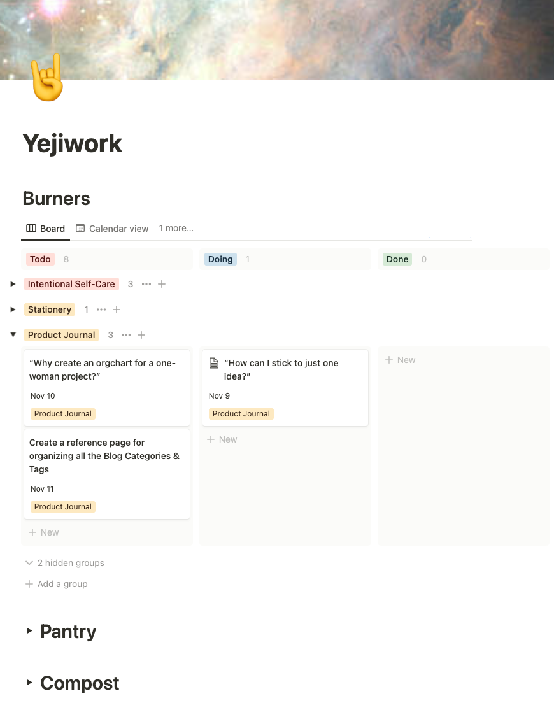

I have always said, “Ideas are easy. Execution is what matters,” countless times. When I was working as a product manager, I was good at ruthlessly prioritizing the minimum valuable product in spite of ambiguity. One of my big product practice crusades has been around scope creep. You can’t front load everything and chase every idea all at once. Because if everything is important, then nothing is important.
So why is it so hard right now? Never mind scope creep on one idea. I keep branching into multiple product ideas that are so disparate that I’ve found myself on WebMD and Psychology Today to check if I have adult-onset ADHD. I’m convinced I at least have a mild case of “I can’t get into a flow and do one thing for a long time because I threw discipline out the window after high school.” It doesn’t roll off the tongue like ADHD.
My theory on why I can’t follow through at the moment is as follows. Working as a product person at a company, I work with the company vision. No matter how ambiguous the product vision and roadmap might be, I have an inkling of where I need to get to eventually. Without this focus, I’m turning my attention towards every problem that I am passionate about.
Heuristics for attention prioritization
To help focus, I spent some time thinking about how to prioritize my attention today. And I’ve decided to borrow some of my heuristics from the kitchen.
- Front-burner: This is the main meal I’m cooking right now. It’s the primary project that is receiving my attention because it’s on power boil.
- Back-burner: This is the side dish I’ve got on simmer. It’s a secondary project that may get my attention once in awhile because I gotta stir it occasionally.
- Pantry: This stores anything and everything from pots and pans to my unopened tub of gochujang and my extra jar of cornichon. It’s miscellaneous references, fleeting ideas, inspirational podcasts, and any other random thoughts that may be used in my meal—or used to cook a whole new meal down the line.
- Compost: This is the disposal. In goes whatever that spoiled in the pantry or if I burnt the food. It’s abandoned ideas that I will choose not to pursue.

With this mental model in mind, I was able to comb through a list of 70-something ideas that I had jotted down. Most have now been shelved in the pantry or chucked away into the compost bin. I’ve decided to add on side dish to the back-burner, though. I’ve always been passionate about all things analog; so I want to try making stationery. Yes, it’s a saturated market. Yes, it’ll likely lead to nowhere. So why am I toiling with this?
First, I want to use my time doing something I enjoy. Both as a product creator and as a user. I feel grateful that I’m currently in a weird limbo where I don’t feel compelled to be productive and to produce outputs all the damn time. So I’ll capitalize on this moment. I’ll eventually have to figure out how to bring in income to live my life. But for now, I’ll happily work on my entrepreneurial discipline and routine by building something I enjoy.
Second, I’ve only ever managed digital product. The extra side dish I’m whipping up is a physical product. It’ll be interesting to explore how product validations compare and contrast between physical and digital product management. And the shininess of the new challenge also intrigues me, too.
If you found my blog helpful, please consider adding to my book fund. You can also make requests on what I should read next!